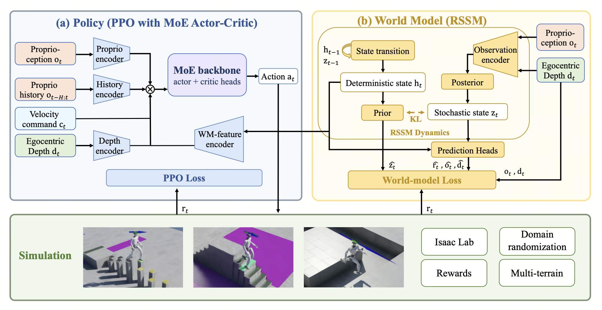

Platform
Unitree G1 · single head-mounted Intel RealSense D435 depth stream · ONNX policy running onboard a Jetson AGX Orin for the results reported in the paper.
1D-Robotics · 2Beijing University of Posts and Telecommunications · 3Soochow University
A recurrent world model, jointly trained with PPO, turns proprioception and a single onboard depth image into a predictive recurrent feature—no foothold labels, no terrain map—so a Unitree G1 clears gaps, stairs, and stepping stones in simulation and onboard, at 93.3% average success on hardware.
Onboard runs on the physical Unitree G1 — one clip per foothold-constrained terrain class, all from a single depth stream.
A row of discrete pads, crossed one step at a time.
0.15 m risers, 0.25 m treads, up and down.
0.8 m gap, cleared in a single step.
The trained policy is exported to ONNX and runs fully onboard the robot, from proprioception and a single head-mounted depth stream — no offboard perception, no precomputed terrain map, no extra state estimator.
Unitree G1 · single head-mounted Intel RealSense D435 depth stream · ONNX policy running onboard a Jetson AGX Orin for the results reported in the paper.
Stepping stones with 0.25 m top surfaces and 0.45 m longitudinal gaps, stairs with 0.15 m risers and 0.25 m treads, and a 0.8 m gap.
Contact patterns match simulation across all three classes, at a 93.3% average success rate over 10 trials per class — stepping stones 100%, stairs 90%, gap 90%.
On the stones the robot traverses the pads without observed foot-placement failures; on stairs it negotiates each riser and places each foot flat on the tread without additional tuning; the 0.8 m gap is cleared in a single step, with a swing-and-landing pattern similar to that observed in simulation. Larger gaps were not tested, for safety.
One predictive recurrent feature, one depth stream, three foothold-constrained classes.
Foothold-constrained terrain is characterized by sparse, discontinuous, or geometrically restricted feasible foot contacts, as encountered on stepping stones, across gaps, and on narrow stair treads. On such terrain, a single misstep often leaves little room to recover, so policies that base foot-placement decisions primarily on the immediately visible terrain are prone to failure. We ask whether a learned predictive summary of near-future observations and rewards can provide the anticipatory information required in such settings.
We present World-Model-Augmented Visual Locomotion (WM-LOCO), which jointly trains a recurrent world model and a PPO policy. Conditioned on proprioception and a single onboard depth image, the world model produces a predictive recurrent feature that guides the policy, without explicit foothold labels.
In simulation, WM-LOCO succeeds on gaps and stepping stones where a matched baseline fails completely, and matches the baseline's success rate on stairs while improving stride efficiency and reducing pelvis acceleration. We deploy the same policy onboard a physical Unitree G1 humanoid using onboard proprioception and a single depth stream; it traverses all three terrain classes with an average success rate of 93.3%.
A recurrent world model jointly trained with PPO, supplying a predictive recurrent feature to the actor–critic.
Locomotion as a POMDP. At each control step the policy observes a 5-frame proprioception history (joint positions, joint velocities, inertial measurements, previous action), a depth image from a single head-mounted camera, and a commanded base-frame velocity. It tracks the command while traversing the terrain and avoiding non-foot contacts; where feasible contacts are sparse, one infeasible step can leave little room to recover before a fall.
A recurrent state-space model (RSSM) with deterministic memory ht and a 128-dimensional stochastic latent zt: a transition updates the memory with the last action, a posterior infers zt from the memory and the current observation, a prior predicts zt from the memory alone, and decoders reconstruct proprioception, depth, and reward. The KL term regularizes the prior toward the posterior, so ht retains information useful for predicting the latent before the current observation arrives.
The PPO clipped surrogate and LWM are optimized in a single joint update—no separate pretraining stage, no offline replay buffer—with world-model gradients propagating into the shared depth and proprioceptive encoders. Only the memory reaches the policy, as fWMt = gψ(ht), alongside its own proprioception history, command, and depth inputs. Inference requires no imagined rollouts, and no foothold labels are used.
A standard velocity-tracking objective is too sparse here, so terrain-specific shaping terms are added—identically for WM-LOCO and PPO within each terrain-training setting—computed from a foot volume-point set following the sensor design of Hiking in the Wild. Stairs use a boundary penalty, a riser-penetration penalty, and a sequential tread-contact reward; stepping stones use a separate parallel formulation in which every valid stone top is active at reset and consumed independently after qualifying contact.

Figure 2 · The WM-LOCO framework: a policy block (left) and an RSSM world-model block (right). The policy consumes its own proprioception history, velocity command, and depth image together with the world-model feature fWMt; a mixture-of-experts backbone fuses them and feeds the actor and critic heads. The PPO baseline omits only the world-model pathway and its auxiliary loss.
Success rates in IsaacLab simulation at three difficulty tiers, with external push perturbations and domain randomization disabled.
Least constrained · riser 9.2–10.4 / 12.8–14.0 / 18.8–20.0 cm
Sparse · gap width 0.4 / 1.0 / 2.0 m
Most constrained · stone edge 33–34 / 30–31 / 25–26 cm
PPO (no WM) WM-LOCO (ours)
| Terrain | Difficulty | PPO | WM-LOCO | Real |
|---|---|---|---|---|
| Stairs | Easy | 87.0% | 94.2% | 90% |
| Medium | 91.4% | 95.7% | ||
| Hard | 91.3% | 92.0% | ||
| Gap | Easy | 0.0% | 98.0% | 90% |
| Medium | 0.0% | 100.0% | ||
| Hard | 0.0% | 90.0% | ||
| Stepping stones | Easy | 0.0% | 87.0% | 100% |
| Medium | 0.0% | 88.3% | ||
| Hard | 0.0% | 78.2% |
Table 1 · Success rates in simulation and on the physical Unitree G1. An episode counts as a success if the robot's center of mass crosses the goal line within 45 s; the better of PPO / WM-LOCO is highlighted. Each simulation cell fixes the terrain at one difficulty tier with external push perturbations and domain randomization disabled, over at least 50 episodes per (method, terrain, difficulty). The PPO baseline shares the reward, perception stream, proprioceptive encoder, AMP motion prior, MoE actor–critic, and iteration budget, and omits only the world-model pathway and its auxiliary loss. Real = success over 10 hardware trials per terrain class.
WM-LOCO succeeds in 78.2–88.3% of stepping-stone episodes; when it fails, the dominant mode is an illegal foothold (23.0%, aggregated over tiers) rather than a fall (1.9%). Baseline failures are mostly falls (61.0%) or lack of progress (36.0%), often within the first few contacts near the beginning of an episode. Gaps show a similar pattern: the baseline stays at 0% across tiers, while WM-LOCO remains at or above 90%.
On stairs both methods reach similar success rates, but they differ in gait quality: WM-LOCO takes longer strides, fewer steps per metre, and lowers pelvis acceleration. Ranges below are relative to PPO across the Easy / Medium / Hard tiers.
If WM-LOCO is useful in your research, please cite our paper.
@misc{liu2026wmloco,
title = {World-Model-Augmented Visual Locomotion for
Humanoids on Foothold-Constrained Terrain},
author = {Liu, Yuxi and Han, Lijun and Wang, Ziming and
Zhang, Ao and Yang, Cong and Sui, Wei},
year = {2026},
howpublished = {arXiv preprint}
}wei.sui@d-robotics.cc